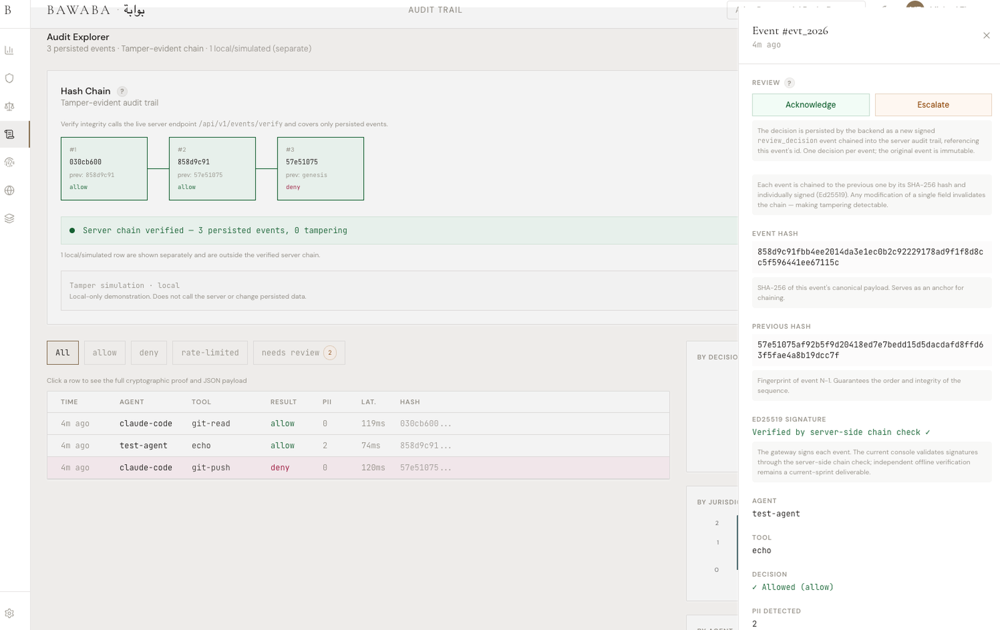
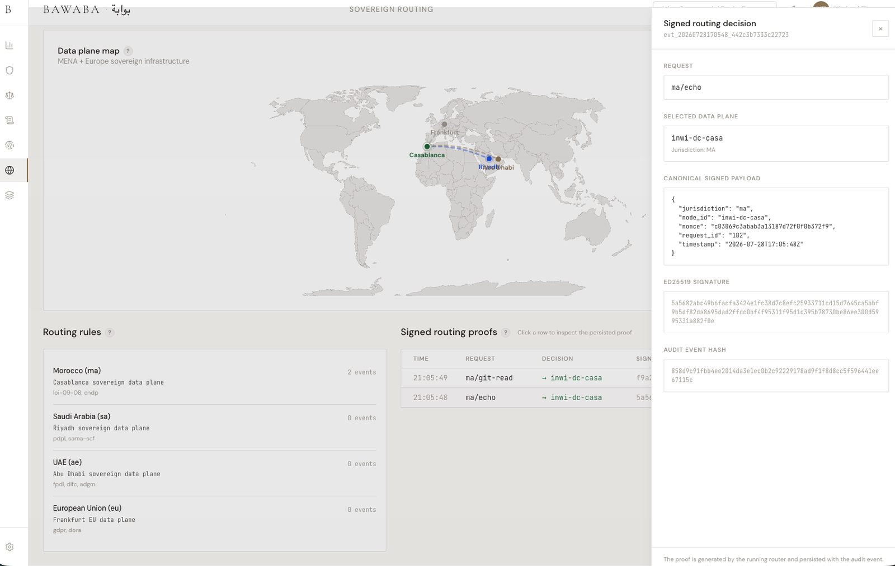
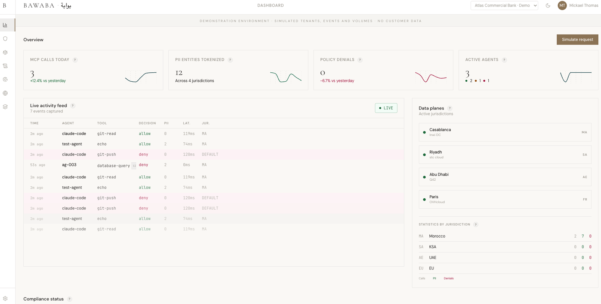

BAWABA decides what agents may do, constrains where sensitive data may go, and records verifiable evidence of governed actions. It runs inside the client perimeter and works across existing gateways, giving enterprises a consistent control and audit layer entirely within their own perimeter. Built for enterprises, public institutions and critical-infrastructure operators deploying AI agents in sensitive or high-stakes environments.



AI adoption is already employee-led: 78 percent of AI users bring their own AI tools to work. Enterprises already run AI agents nobody approved: employees connect Claude, Cursor or ChatGPT to internal systems through MCP gateways that route calls but govern nothing. The enterprise inherits the actions and the liability. The gateway does not answer the questions an auditor or a regulator asks: which agent acted, under which policy, where did the data go, prove it. Under default-deny, an agent nobody registered is an agent that cannot act. EU AI Act obligations are phasing in from August 2026, while GCC data-sovereignty and AI-governance requirements keep strengthening. The selection window for agent governance infrastructure is now.
Source: Microsoft and LinkedIn, 2024 Work Trend Index, 31,000 respondents across 31 countries.
Overlay. BAWABA runs beside the gateway the institution already operates, open source or commercial. The gateway keeps transporting traffic; BAWABA provides the decision and evidence layer. Inline gateway integration and signed external-event ingestion are in active development.
Sovereign embedded. A sovereign embedded package is being developed for air-gapped and data-constrained environments, combining decision, enforcement and evidence inside a single perimeter.
Go keeps the control plane lightweight and easy to deploy. Rust handles sensitive data in a memory-safe engine. PostgreSQL gives institutions a familiar and reliable evidence store. Ed25519 signs jurisdiction decisions; SHA-256 links the audit chain. BAWABA runs entirely within the client perimeter, under the institution's sole control. The console observes; the cryptographic trust boundary stays server-side, independent of it.
| Available now | Default-deny policy engine, MENA PII tokenization, signed jurisdiction proofs, tamper-evident audit evidence with one-command server-side verification, quotas, rate limiting, and a working demonstration console. |
| In active development | Inline gateway integration, signed external-event ingestion, independent evidence verification and pilot-grade assurance. |
12-week paid pilots for regulated design partners, converting to annual licences priced by agents governed, gateways integrated and evidence requirements. Audit and law firms as a validation channel per jurisdiction.
BAWABA is in active discussions with two regulated institutions regarding potential 12-week design-partner pilots, and is opening a limited number of additional pilot conversations across the GCC and MENA. The model: paid overlay deployments on the gateway already in place, concluding with an evidence pack for risk and security review.
Download a verifiable sample evidence pack — signed decision, tamper-evident audit chain and a one-command verifier.